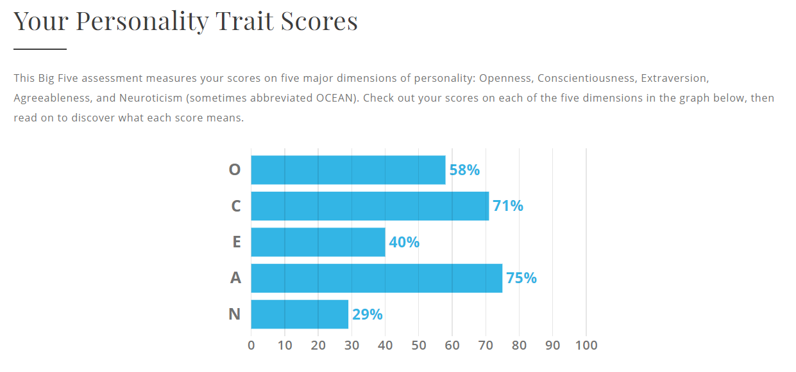
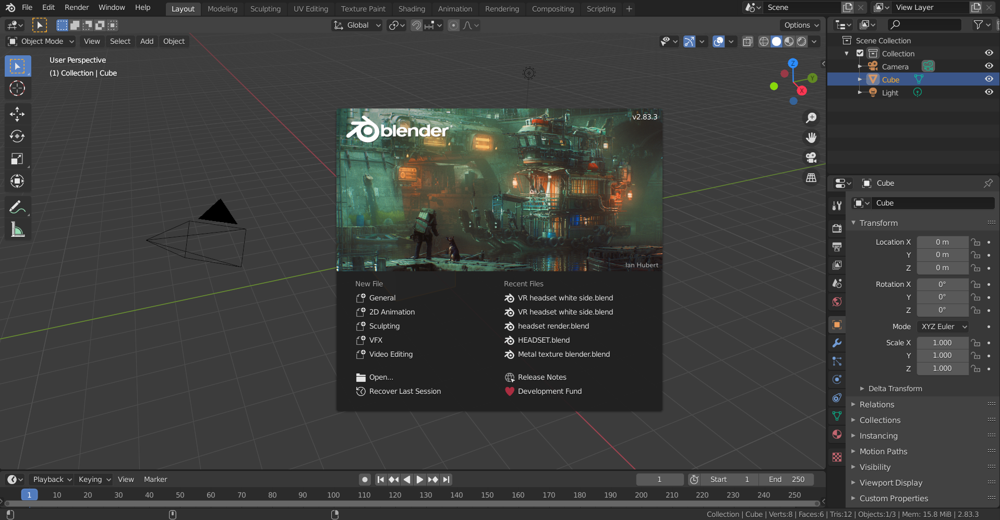
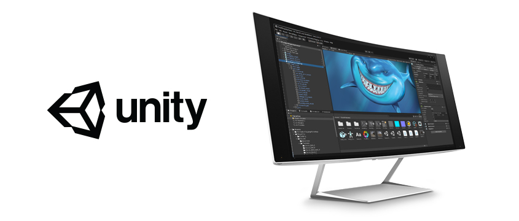
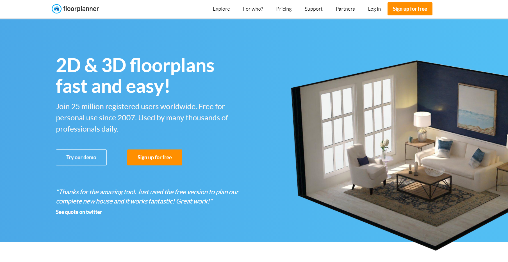

My Profile
Introduction
My name is Gordon Hu, I am born in Australia, my nationality is Chinese. I have graduated high school and currently a student studying the ‘Bachelor of Information Technology’ at RMIT. I can speak 3 languages – Chinese, English and Shanghai dialect. My greatest joys are spending time with family and friends, and spending my free time playing video games with friends. I used to do swimming lessons, piano lessons, table tennis lessons and martial arts. Interestingly I have a pet crayfish that I have had for more than 3 years.
Interest in IT
I am most interested in IT and programming ever since at a young age. I have gained my interest in computers from my father,
he is an IT programmer working at Hansen Technologies. Every time I watched him work, I always questioned, how can a code do all these tasks and end up satisfying the customers? It was just mind blowing.
Throughout my life I also gained further interest from experiencing different technologies, from the Nintendo DS, Wii to recent technology like Virtual
Reality which intrigued me to learn about the world of technology and IT.
I chose to study at RMIT is because RMIT has a good reputation for its wide range of computing and science courses
and has multiple options to choose from and giving the opportunity for a future job, which I believe RMIT provides the best courses and experiences for IT and Computing unlike other universities.
The public transport to RMIT is also very convenient, the campus is huge, the environment and community is nice and is close to Melbourne Central.
From my studies I am expecting to learn more about the IT
field and the wide and interesting technology of the IT industry. As well as to learn the important co-operative skills with the people around you, building the necessary teamwork, discussion skills
required for future IT jobs.
- Gordon Hu
S3897271
S3897271@student.rmit.edu.au
Ideal Job

Software Engineer
The position is Software Engineer working at The Royal Melbourne Hospital. This position particularly appeals to me as I am a passionate about IT with a strong interest in programming and the job is to develop and maintain software to help patients and doctors and to help people in general, as I have a record of being ill in the past so I would also like to support others.
Skills Required
This Software Engineer position requires to create, test and to maintain software ‘applications for the medical research sector’. It requires a Degree in Information Technology or Computer Science with experience in a health/biomedical science environment and skills in a range of software development systems such as: Web Development, Object Oriented Programming. It requires teamwork, high interpersonal, organisational, time managing and problem-solving skills with an optimistic view of solving problems and to be able to meet short deadlines.
Skills I Have
Currently I have just started my course in RMIT so my skills are limited, I have experience with basic python programming and html. I have good time managing skills and is able to be organised. I view issues optimistically and am a hard worker, once I am assigned to a task I will stick to it until I finish.
My Plan
To be able to meet the qualifications that are required, I plan on learning how to program Java, C/C++, web development and different IT courses to build my skills of programming and teamwork abilities and to be able to problem solve and work under different situations and deadlines throughout my studies and graduate to obtain the degree. I could further continue my studies or work in a health/biomedical science environment to gain experience for the position.
Visit MelbourneHealth.comPersonality Profile

Myer Briggs Test
Strengths
Supportive – Defenders are the universal helpers,
sharing their knowledge, experience, time and energy with anyone who needs it, and all the more so with friends and family.
Reliable and Patient – Rather than offering sporadic, excited rushes that leave things half finished, Defenders are meticulous and careful,
taking a steady approach and bending with the needs of the situation just enough to accomplish their end goals. Defenders not only ensure that things
are done to the highest standard, but often go well beyond what is required.
Imaginative and Observant – Defenders are very imaginative,
and use this quality as an accessory to empathy, observing others’ emotional states and seeing things from their perspective. With their feet firmly planted
on the ground, it is a very practical imagination, though they do find things quite fascinating and inspiring.
Enthusiastic– When the goal is right,
Defenders take all this support, reliability and imagination and apply it to something they believe will make a difference in people’s lives.
Loyal and Hard-Working – Given a little time, this enthusiasm grows into loyalty – Defender personalities often form an emotional attachment to the ideas
and organizations they’ve dedicated themselves to. Anything short of meeting their obligations with good, hard work fails their own expectations.
Good Practical Skills – The best part is, Defenders have the practical sense to actually do something with all this altruism. If mundane, routine tasks are
what need to be done, Defenders can see the beauty and harmony that they create, because they know that it helps them to care for their friends, family, and anyone
else who needs it.
Weaknesses
Humble and Shy– This is possibly Defenders’ biggest challenge, as they are so concerned
with others’ feelings that they refuse to make their thoughts known, or to take any duly earned credit for their contributions.
Take things too personally
– Defenders have trouble separating personal and impersonal situations – any situation is still an interaction between two people, after all – and any negativity from conflict or
criticism can carry over from their professional to their personal lives, and back again.
Repress Their Feelings– People with the Defender personality type are private
and very sensitive, internalizing their feelings a great deal. Much in the way that Defenders protect others’ feelings, they must protect their own, and this lack of healthy emotional
expression can lead to a lot of stress and frustration.
Overload Themselves– Their strong senses of duty and perfectionism combine with this aversion to emotional conflict
to create a situation where it is far too easy for Defenders to overload themselves or to be overloaded by others.
Reluctant to Change– These challenges can be
particularly hard to address since Defender personalities value traditions and history highly in their decisions. A situation sometimes needs to reach a breaking point before
Defenders are persuaded by circumstance.
Too Altruistic– This is all compounded and reinforced by Defenders’ otherwise wonderful quality of altruism. Being such warm,
good-natured people, Defenders are willing to let things slide, to believe that things will get better soon, to not burden others by accepting their offers of help, while their
troubles mount unassisted.
Online Learning Style Test
See my entire profile here
This online style learning test demonstrates that I am a Kinaesthetic learner which I prefer practical exercises, examples, things that require actually creating something, thing that are real instead of reading a whole document.
Big Five Personality Test
The result of this test demonstrates the five major dimensions of personality of myself, these ‘personalities’ should be considered
when creating a team.
Openness - describes a person's tendency to think abstractly. Those who are high in Openness tend to be creative, adventurous, and intellectual.
Conscientiousness – stating
that those with a higher score are organised and determined, and are able to go without immediate satisfaction for the sake of long-term achievement.
Extraversion – I am not very extraverted
to engage socially.
Agreeableness – describes the extent to which a person prioritises the needs of others over their own needs. People who are high in Agreeableness experience a great deal of empathy
and tend to get pleasure out of serving and taking care of others.
Neuroticism – describes a person's tendency to respond to stressors with
negative emotions, including fear, sadness, anxiety, guilt, and shame. Low Neuroticism scorers will react to a situation calmly and not with strong negative emotions.
Test Results
The results of these tests represent what type of person I am, it gives a rough overview of myself and the strength and weaknesses that I
have. It also demonstrates my abilities and skills when working in a group so by understanding that would be crucial to consider when creating a team.
From the tests it shows that I have reliable and patient, imaginative, observant
and analytical skills which will allow me to have great teamwork abilities and to get the job done. However, the tests shows that I am introverted and shy which will create a lack of communication that will influence my behaviour in a
team.
When forming a team, I should consider opening up and engaging in finding a team and introducing myself first, finding people that I can be myself to and become confident in order to use all the positive skills to support the
team. Also shown from the ‘learning style test’, my learning preference is kinaesthetic which suggest that when forming a team there should be different a group of people with different learning preference to complete the different parts of
the project more efficiently.
Project Idea
Overview
The project is to create a Virtual Reality headset model by using a 3D software such as Blender and an interior design of a house that can be viewed full 360° immersion from inside of the headset or on a computer or mobile device however, without the VR function. The main purpose of this project is so the Virtual Reality headset can be used to provide immersion for the interior design to be viewed and experienced.
Motivation
This project idea is created and motivated in response to the current situations with Covid-19 that bring out problems such as isolation. This project aims to design a Virtual Reality headset and virtual house that attempts to provide people with an escape from their isolation and creates a virtual holiday from inside their home. This can also be used or a solution for Real Estate. The interior design can be viewed and used in the Virtual headset, it can be a way to ‘replace’ traditional interior designs and to provide customers with the set of aesthetically pleasing but efficient solutions for a better use of space which to be viewed in the comfort of their own home.
Description
The project idea is to create a Virtual Reality headset model and an interior design that can be viewed. The VR headset acts as a device for the interior
designs to be viewed that provides the immersion and the ability to interact with the environment.
The virtual reality headset is a head mounted device that gives the wearer a whole new experience. The VR headset will be a model
of the exterior only and will not demonstrate the interior components and specifications. The VR headset itself will be simple and minimal in design while ensuring it also provides comfort for the users. The material of the headset also
has to be durable yet lightweight, the headset can be plastic to prevent it from breaking when hit or dropped. It will include a secure head strap possibly with a rubbery material that supports the back of the head with soft padding to eliminate
discomfort, the head strap will be easily adjustable due to the material, the head strap will also be a weight distribution to balance the front heaviness that creates discomfort overtime. The face cover will be a soft material with possibly leather
material to prevent soaking of sweat and reduce light leakage. The speakers for the headset will be an over-ear design to provide high quality surround sound that will deliver better immersion and experience. The eye pieces will also be adjustable for
the different IPD (distancing between the pupils) of users to create maximum comfort.
The features of the VR headset aim to work together to create a minimal and comfortable device that gives an immersive experience for the users to view the modern
interior designs with stimulating the real world.
The Virtual house or interior design will be modern, it will include all the necessary rooms that’s in a traditional house. The interior design will not only be attractive and pleasing to look at, it
will also ensure that it will be fully functional and to proper scale just like a real house.
When viewing the interior design, the user will be placed in a virtual house that stimulates the real world. The house will include multiple windows to provide
natural lighting and also lights in the house for proper lighting. The house will aim to have a wide colour choice to make features and room look appealing and also the colours will be depended to create the environment of the room. The interior designs can
also be viewed on a computer or mobile device but without the immersion and the ‘escaping of reality’.
By creating this project, it can allow people to have more freedom in their home where they can go on a Virtual holiday and experience other homes with
the surreal feelings. The headset can also be used as a regular VR headset to view movies and play games. The interior designs can provide Real Estate with opportunities such as virtual tours where people can have the option of viewing interior designs without the
need to physically go there and can also maintain social distancing.
Tools and Technologies
The Virtual Reality headset model can be created on 3D CAD software or 3D modelling software possibly by using Blender, a free open-source 3D computer graphics software that can be used for 3D modelling.
 https://www.blender.org/The interior design can be created on Unity which is a cross-platform game engine that can be used to create 3D models and interior for Virtual Reality and export it as a VR compatible file. Another option in creating the 3D interior design without the use of 3D CAD software is by using a simple browser-based platform called ‘Floorplanner’. ‘Floorplanner’ can create VR compatible 2D and 3D cloud-rendered interior designs without the need of additional downloads.
 https://unity.com/  https://floorplanner.com/Skills Required
Creating the Virtual Reality headset model requires the skill of planning and developing a headset design and ensuring the model is not only aesthetically pleasing but also functional and is comfortable for the users. Creating the 3D model with Blender requires the skill of knowing how to model 3D objects with the software which could be difficult however I have the basic knowledge of 3D modelling. If creating the interior design on Unity the skills required would be more complicated, by knowing how to model on Unity including designing the rooms and furniture from scratch and to scale. The simpler way of creating the interior design would be using ‘Floorplanner’ which only requires the skill of knowing how to use the website and making the interior to scale.
Outcome
If the goal of this project is accomplished it will benefit those people who feel isolated and this development could create a new opportunity for Real Estate and interior designers to create a whole new virtual way of experiencing interior and houses without the needs to physically go there. By creating the Virtual Reality headset, it will allow people to escape reality and experience a whole new world from exploring the immersive and surreal interior designs without ever leaving the safety and comfort of their own home.